什么是编译程序
翻译程序
把某一种语言程序 ( 称为源语言程序 ) 等价地转换成另一种语言程序 ( 称为目标语言程序 ) 的程序。
比如说C语言写的程序交给翻译程序后，可以翻译成目标程序，例如某台机器的目标指令。
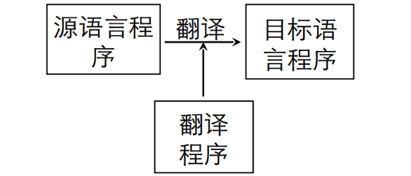
编译程序
编译程序一种特殊的，较为复杂的翻译程序。
编译程序把某一种高级语言程序等价地转换成另一种低级语言程序 ( 如汇编语言或机器语言程序 ) 的程序。
::: tip
翻译程序是任何两个语言之间都可以翻译，而编译程序特指高级语言程序翻译到低级语言程序。
:::
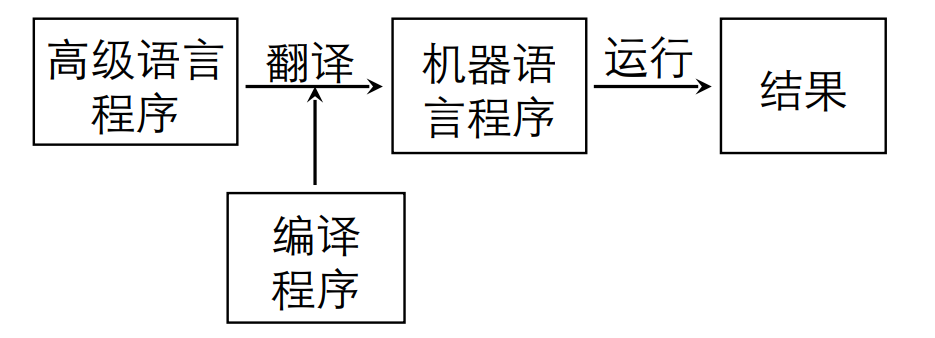
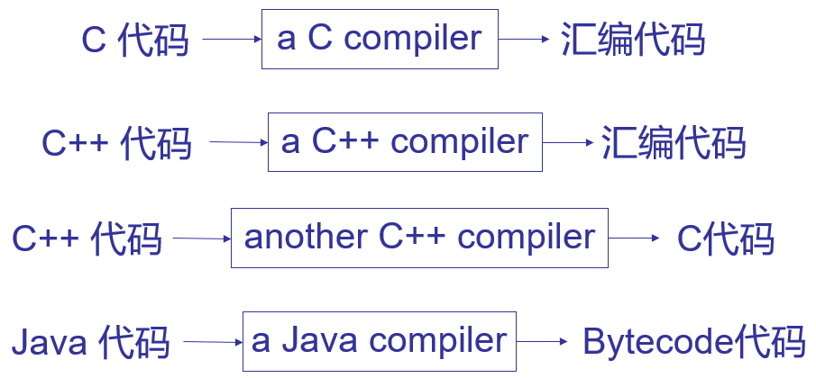
传统的编译程序源语言通常为高级语言（如C、C++、Java、Python…），目标语言通常为机器级语言或较低级的虚拟机语言（如汇编语言、机器语言、Bytecode…）。
::: info
高级语言的执行通常分为两个阶段：
- 编译阶段：将源程序变换成目标程序；
- 运行阶段：由所生成的目标程序连同运行系统接收程序的初始数据做为输入，运行后输出结果；
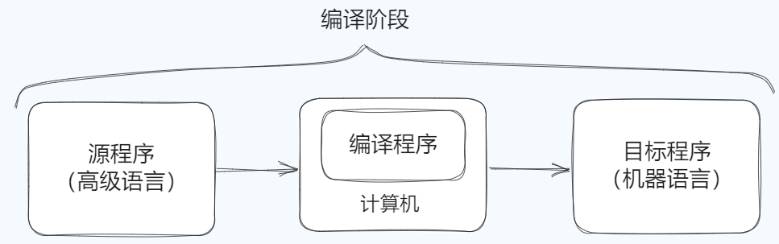
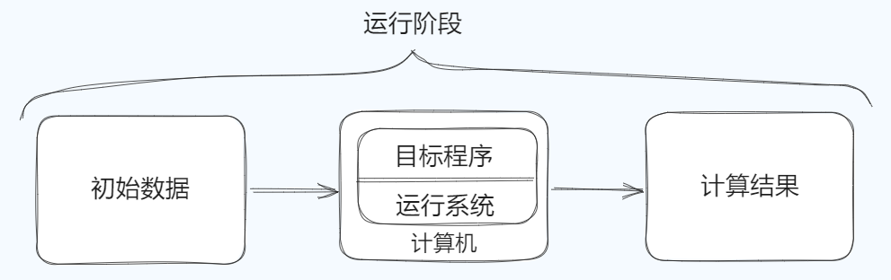
如果目程序是汇编语言形式的，则在编译阶段和运行阶段之间还有一个汇编阶段
- 汇编阶段：将编译生成的汇编语言目标程序经过汇编程序变换成机器语言目标程序；
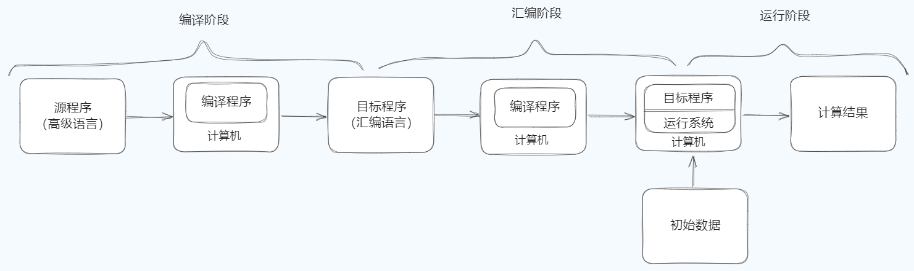
:::
解释程序
解释程序也是一种翻译程序，它把源程序作为输入，一条一条读入并解释执行。
- 不产生目标程序
- 不区别翻译阶段和执行阶段
- 翻译源程序的每条语句后直接执行
- 程序执行期间一直有解释程序守候
- 常用于实现虚拟机
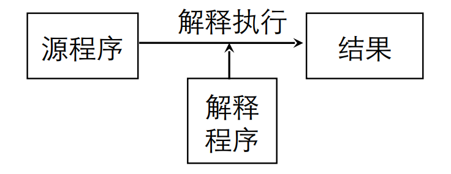
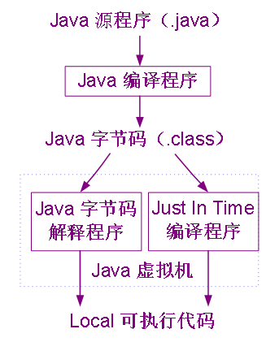
编译过程
编译程序的工作过程是指从输入源程序开始到输出目标程序为止的整个过程。
整个编译过程可以划分五个阶段：词法分析、语法分析、语义分析和中间代码生成、优化、目标代码生成。
词法分析
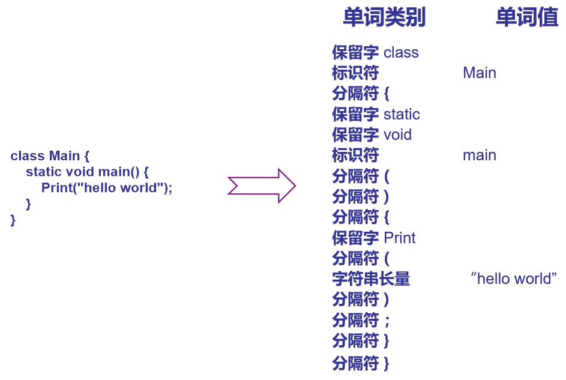
-
任务：输入源程序，对构成源程序的字符串进行扫描和分解，识别出一个个单词符号。
-
依循的原则：构词规则（语言的词法规则）
-
描述方法：正规式和有限自动机
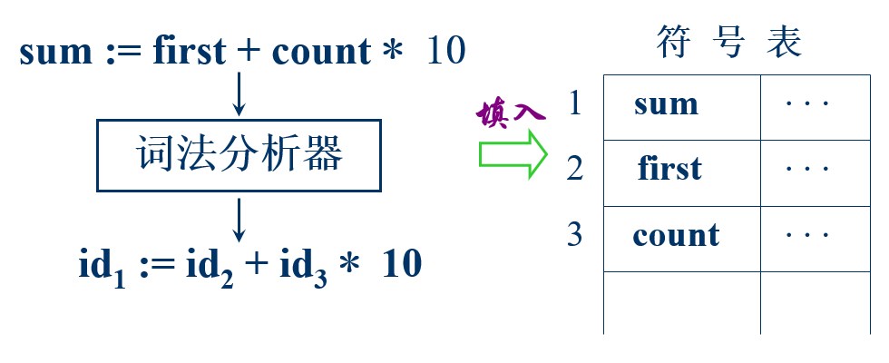
语法分析
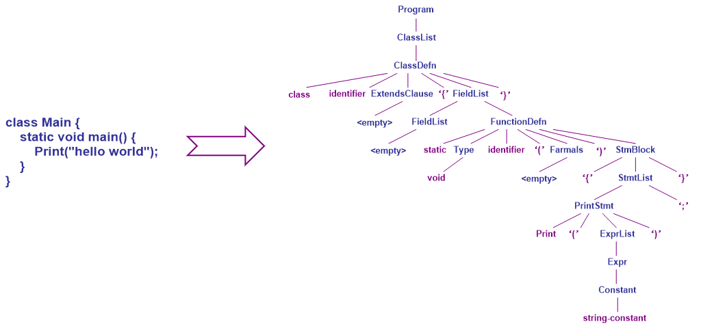
-
任务：在词法分析的基础上，根据语言的语法规则把单词符号串分解成各类语法单位（语法范畴）。
-
依循的原则：语法规则
-
描述方法：上下文无关文法
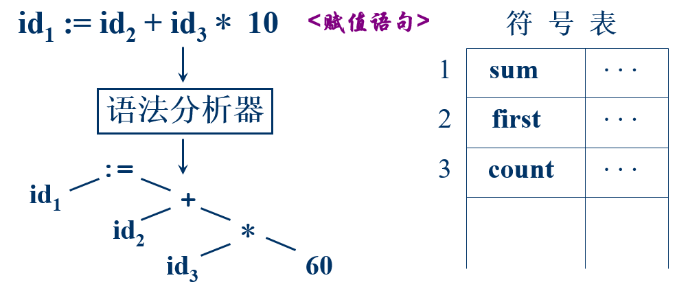
语义分析和中间代码生成
- 任务：对各类不同语法范畴按语言的语义进行初步翻译；
- 对每种语法范畴进行静态语义检查，如变量是否定义、类型是否正确等。
- 在语义检查正确的情况下进行中间代码的翻译。
- 依循的原则：语义规则
- 描述方法：属性文法
- 中间代码：三元式、四元式、树， …
::: info
中间代码是介于高级语言的语句和低级语言的指令之间的一种独立于具体硬件的记号系统，它的表达性和复杂性介于高级语言和低级语言之间。
:::
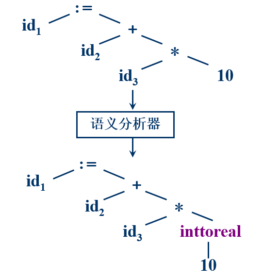
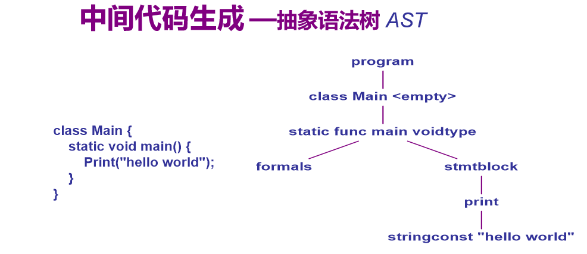
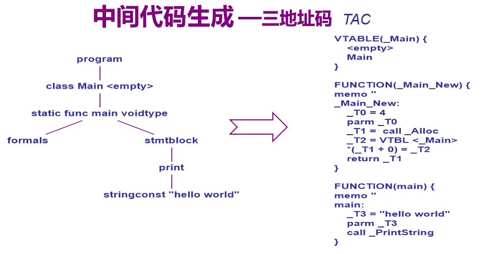
优化
-
任务：对于前阶段产生的中间代码进行等价变换或改造（另一种优化是针对目标机即对目标代码进行优化），以期在获得更高效（节省时间和空间）的目标代码
-
依循的原则：程序的等价变换规则
目标代码生成
-
任务 : 把中间代码变换成特定机器上的机器语言程序或汇编语言程序。
-
依赖于硬件系统结构和机器指令的含义
-
目标代码三种形式
- 绝对指令代码 : 可直接运行；（机器语言）
- 可重新定位指令代码 : 需要连接装配；（机器语言）
- 汇编指令代码 : 需要进行汇编；（汇编语言）
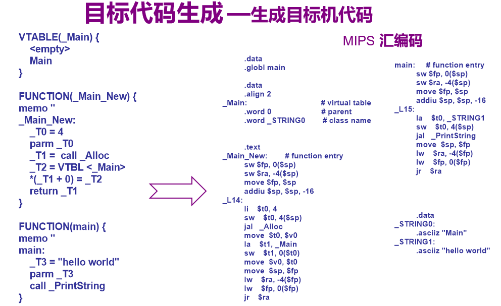
编译程序的结构
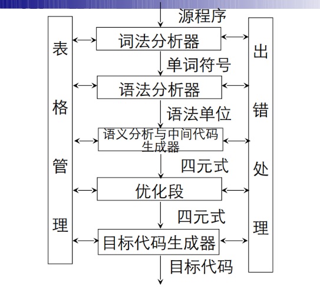
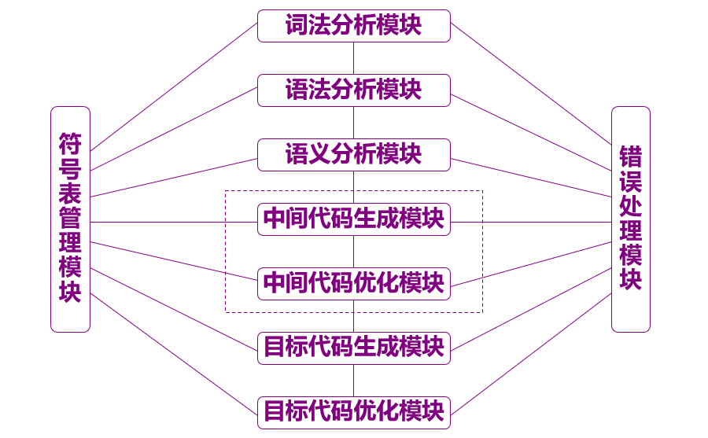
表格
编译过程中源程序的各种信息被保留在不同的表格里，编译过程的绝大部分时间都用在造表、查表和更新表格上。
符号表：收集每个名字的各种属性用于语义分析及后续各阶段
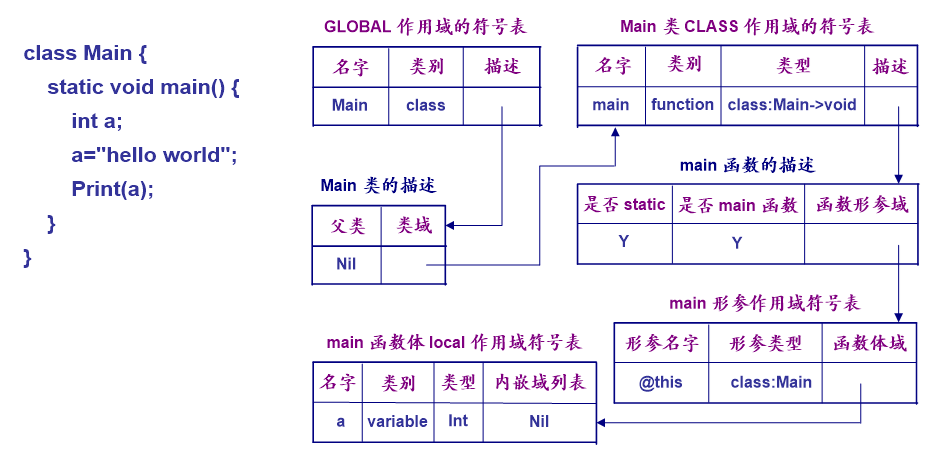
出错处理
出错处理与编译的各个阶段都有联系，与前三个阶段的联系尤为密切。
主要功能：
- 检查错误：报错错误信息
- 排错：恢复编译工作
遍
” 遍 ” 是对源程序或源程序的中间表示从头到尾扫描一次。
阶段与遍是不同的概念：
- 一遍可以由若干段组成；
- 一个阶段也可以分若干遍来完成；
编译前端与后端
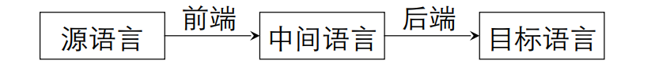
-
编译前端
与源语言有关，如词法分析，语法分析，语义分析与中间代码产生，与机器无关的优化；
-
编译后端
与目标机有关，与目标机有关的优化，目标代码产生；
好处：
- 程序逻辑结构清晰
- 优化更充分，有利于移植
编译程序的开发
编译程序的开发通常采用
-
自编译
用某种高级语言编写自己的编译程序称为自编译。
-
交叉编译
用A机器上的编译程序来产生在B机器上运行的代码。
-
自展
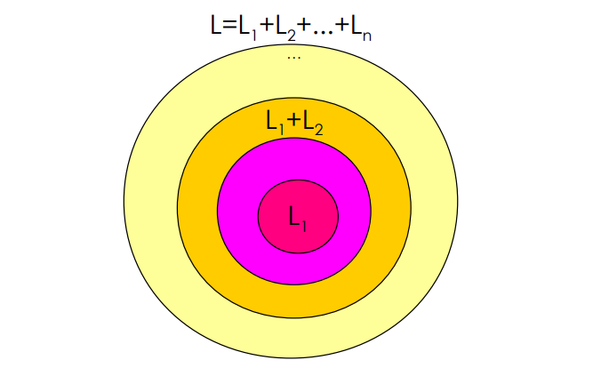
-
移植
A机器上的某种高级语言的编译程序稍加修改就能在B机器上运行。
一个程序若能较容易的从A机器搬到B机器运行，则称该程序是可移植的。
移植具有一定的局限性。